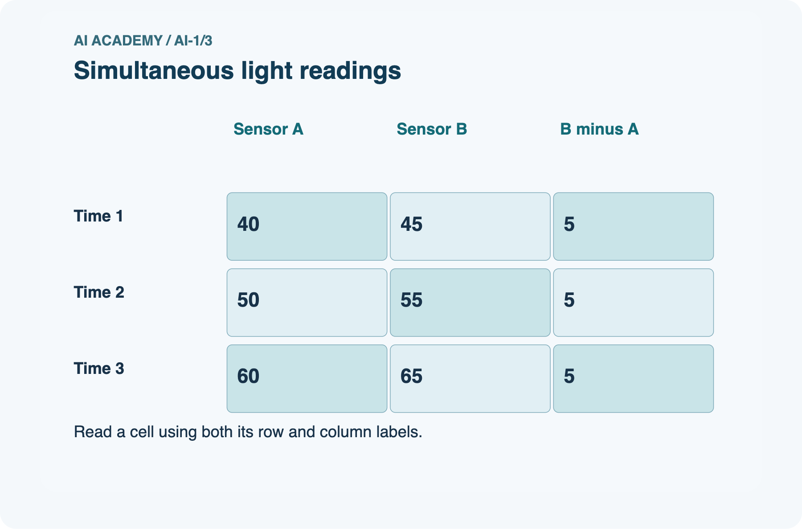
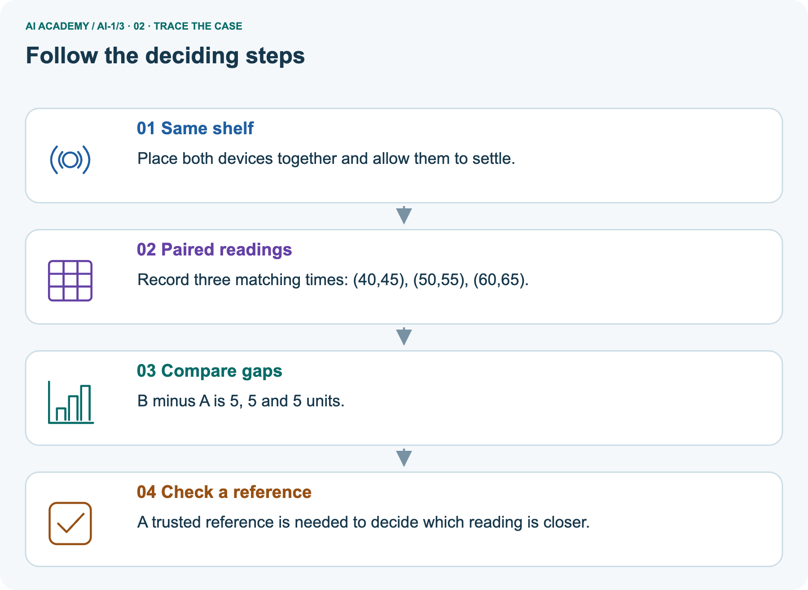
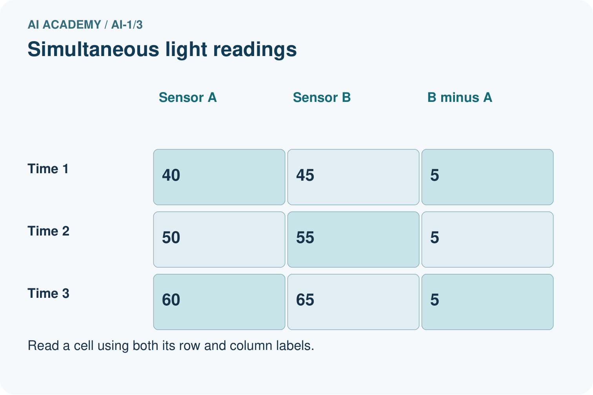
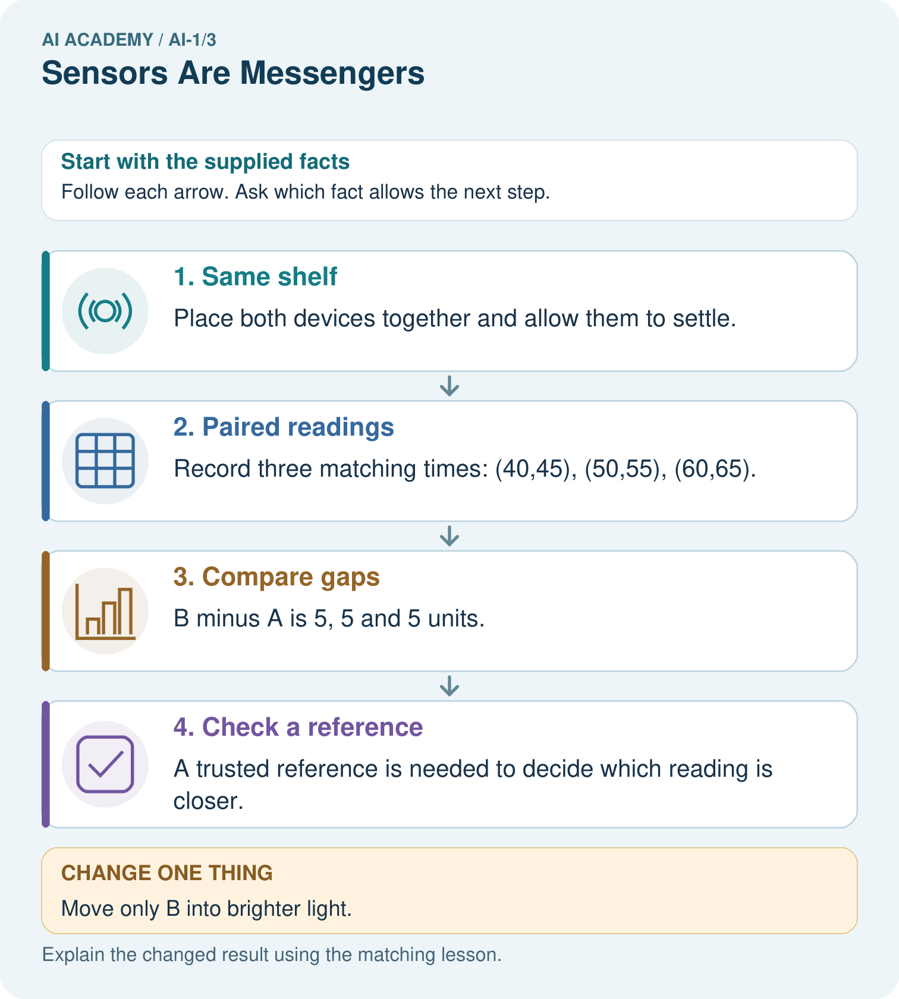
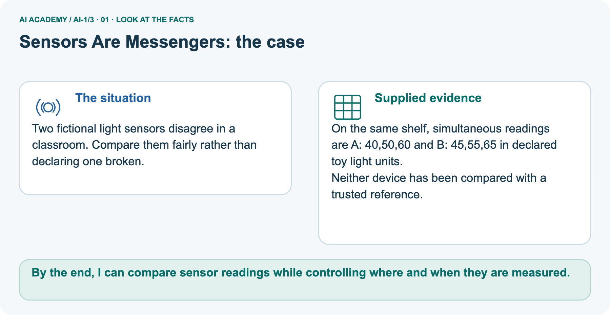
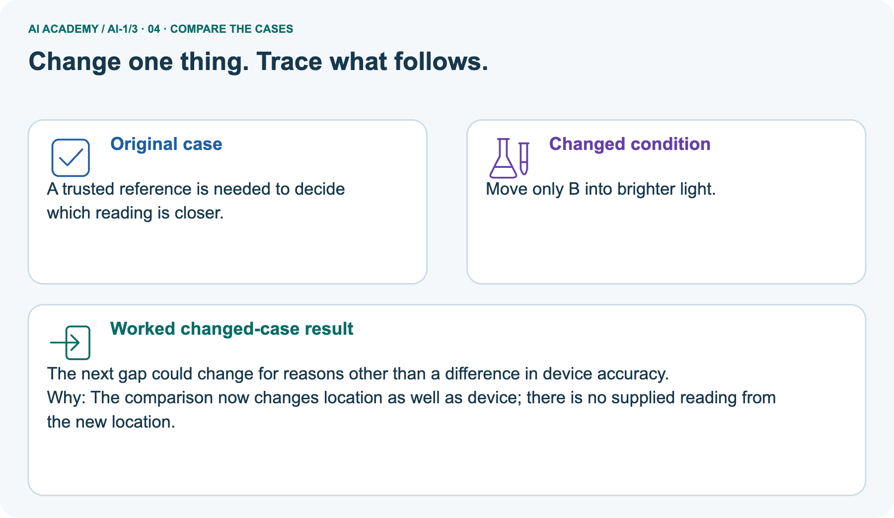
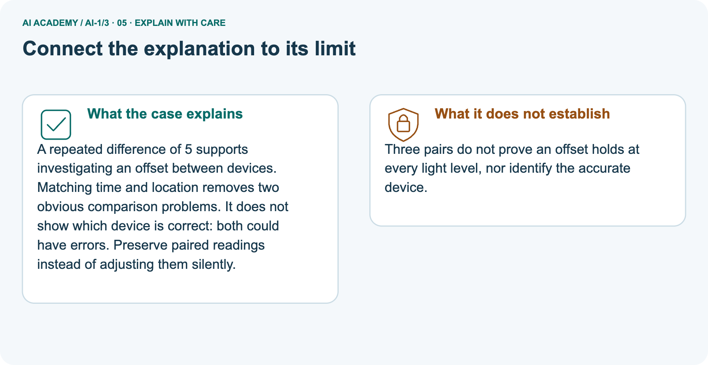
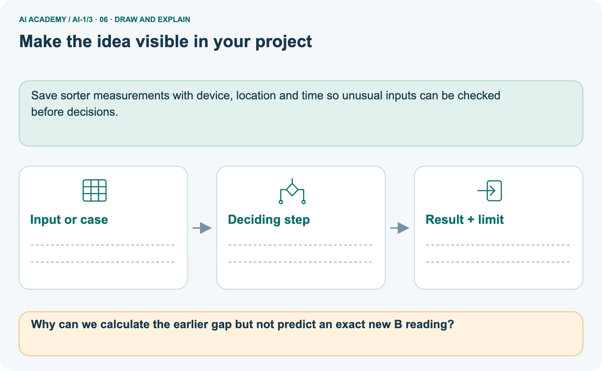

AI Academy · Level 1 · Grade 6 · Week 3 · Teacher guide
Sensors Are Messengers
Learn to understand, design, build, test and explain AI systems responsibly.
Project: Helpful Classroom Sorter
THE CONNECTED WEEK
Teach sensing as a limited evidence path.
Model the measurement record, distinguish sensing from decisions, compare devices fairly and reserve the sound-display case for independent evidence.
Keep one habit: Look for recorded conditions, a fair comparison and a defensible limit.
Main lesson · Section 1
Prepare the sensor lesson
Teach the difference between a physical quantity, a recorded value and an interpretation.
Learning goal and preparation
Primary target: Describe a measurement using its quantity, value, unit and conditions
Separate physical quantity, recorded measurement and interpretation throughout. No hardware is required. Avoid describing every difference as error or every repeated value as accuracy.
Consistent disagreement is a finding; deciding which device is accurate requires additional reference evidence. Keep units visible in both speech and written work.
By the end, I can compare sensor readings while controlling where and when they are measured.
What to prepare
Use the supplied scenario, student illustrations and blank paper. For numeric work, offer counters or a calculator after learners show the setup. Fictional records are supplied; personal data and paid accounts are unnecessary.
The paired-temperature table and two paper device labels
A sketch of a classroom with a window, shaded wall, speaker and door
Optional ordinary room thermometers used according to school procedures; paper data is sufficient
Main teaching plan
| Session | Sequence and minutes | Resources |
|---|---|---|
| Session 1 · Understand · 45 min | 0–7: recall and prerequisite; 7–15: inspect the concrete case and predict; 15–30: teacher models the worked trace; 30–40: learners explain a step using the text and visual; 40–45: check the core idea. | Use Your mission, Notice the evidence, See how it works, Compare the cases, Words that unlock the idea and Follow a worked example; record the brief recall in the workbook. |
| Session 2 · Practise · 45 min | 0–5: retrieve the procedure; 5–15: W2 completion practice; 15–23: explain and check with a partner; 23–30: each learner answers the misconception check; 30–40: targeted reteaching or a harder variation; 40–45: prepare the investigation. | Use Find and repair a mistake, Practise together, Run the investigation and Build your understanding; use the matching workbook W2 and misconception check. |
| Session 3 · Investigate and transfer · 45 min | 0–5: retrieve the decision rule; 5–20: investigate or trace; 20–30: start the independent case; 30–38: connect the project; 38–43: act on feedback; 43–45: plan the return check. | Use Run the investigation, Connect your project, Show what you know, Study a complete case and Try a new case independently. Allow extra time for the full task set. Use a coding lab only when this week actually provides one; Your lesson route is the planning section. |
This is a starting allocation of 135 minutes, not a validated duration. Preserve all named topics. Schedule extra time for connected examples, the full investigation, independent cases and project building.
Repeated copies of a case share one recorded attempt; they are not new evidence.
Retrieve information loss
Without opening the old lesson, explain one key idea from Input, Process, Output. Give an example and a mistake that the idea helps you avoid.
Look for: Trace information through a system without confusing information with a physical action
Reference example, not the only acceptable wording: Input includes both request fields and all three catalogue records. The process checks science AND pages<=120.
Output contains A only; B fails the length condition and C fails the genre condition. Listing A does not establish that a copy was reserved.
No. A maximum of 26 degrees C could occur at noon or at 3 pm. The retained number does not preserve time.
Earlier wording, alternative practice and picture transcripts
Teach the learning cycle
Retrieval answer guidance
Input, Process, Output
Use the student module and workbook section with this exact week title. The worked case, independent question and answers below form one aligned lesson sequence.
What the learner must demonstrate
Two light sensors report 40 and 80 in different rooms. Their settings and units are unknown. Can you conclude the second room is twice as bright? Design a fair comparison without using a camera or personal data.
Concept to explain
Sensors measure signals; later processing gives those signals meaning.
| Term | Meaning |
|---|---|
| sensor | device that measures a physical signal |
| signal | a changing quantity that can be measured |
| measurement | a recorded value describing part of a signal |
| data | represented information available for processing |
Prepare the class
This compact option is not the full-week schedule. Use the main teaching cycle and allow extra sessions for the investigation, independent work and project.
Allow 80 minutes: recall 8; explanation 12; worked demonstration 15; guided practice 20; independent assessment 15; project and reflection 10. Extend the lab into a second session when needed.
Preparation for the connected explanation
Readiness answer
End goal for the pictorial case
This added worked case illustrates the week’s main idea. Retain all original and connected topics; schedule its practice within the teaching cycle.
Main lesson · Section 2
Teach measurement before interpretation
Tie every conclusion to the quantity, recorded value, conditions and comparison evidence.
Begin with the number 24
A garden display shows 24. Is that warm? We cannot interpret the number until we know what was measured and the unit.
It might mean 24 degrees Celsius, 24 percent soil moisture according to a particular device, or 24 hours since watering. The screen alone does not supply the missing meaning.
A useful measurement record names the quantity, value, unit, time and relevant conditions. For air temperature, the location and exposure matter: a device in direct sunshine may warm differently from one in shade.
Record the conditions rather than assuming that every nearby device measured the same situation.
Measurement is a way of representing part of the physical world. It does not capture everything about that world.
One air-temperature reading does not tell us how dry the roots are, whether a plant is diseased or whether watering is permitted.
Separate sensing, rule and decision
The sensor responds to a physical quantity. Electronics convert the response into a recorded value. A later program can compare the value with a threshold.
Nothing about this path requires us to claim that the sensor understands plant health.
The rule uses exceeds 28, so a reading of exactly 28 does not trigger it. At 29 it does.
This boundary is a property of the written rule; it is separate from the question of whether the measuring device is accurate enough for the intended purpose.
UNDER THE HOOD A sensor is a transducer: it converts a physical quantity into a signal a computing system can represent. Sensing and interpretation are separate. A camera measures light; an image model may later infer a label.
Model the light-sensor comparison
Two fictional light sensors disagree in a classroom. Compare them fairly rather than declaring one broken.
On the same shelf, simultaneous readings are A: 40,50,60 and B: 45,55,65 in declared toy light units.
Neither device has been compared with a trusted reference.






A repeated difference of 5 supports investigating an offset between devices. Matching time and location removes two obvious comparison problems. It does not show which device is correct: both could have errors.
Preserve paired readings instead of adjusting them silently.
Move only one sensor
Change: Move only B into brighter light.
Prediction: The next gap could change for reasons other than a difference in device accuracy.
Reason: The comparison now changes location as well as device; there is no supplied reading from the new location.
Limit the conclusion
Three pairs do not prove an offset holds at every light level, nor identify the accurate device.
Extend to temperature devices
Two devices are placed side by side in a shaded room and allowed to settle. At three agreed times, device A reads 20, 21 and 20 degrees C; device B reads 22, 23 and 22 degrees C. B is 2 degrees higher on every comparison.
That pattern is evidence of a consistent difference under these test conditions.
| Time | A in degrees C | B in degrees C | B minus A |
|---|---|---|---|
| 10:00 | 20 | 22 | 2 |
| 10:05 | 21 | 23 | 2 |
| 10:10 | 20 | 22 | 2 |
We cannot conclude from agreement patterns alone that A is correct and B is wrong. A suitable checked reference can help investigate.
We also need to consider whether the devices have different response times, resolutions or placement. Three comparisons in one room do not prove performance in every temperature range.
Calibration is a reference check, sometimes followed by an adjustment. Do not simply subtract 2 from every future B reading because these three pairs happened to differ by 2.
A correction needs support over the conditions where it will be used.
Use the visual deliberately
Use the diagram and verbal explanation together. Ask learners to match a sentence to a specific visual step; do not assign learners fixed visual or auditory learning styles.
Cover the result. Ask learners to name the inputs and predict the next step. Uncover one step, connect the icon to the actual procedure, and explain its evidence. Then change the supplied condition and compare.
The picture is a representation; it does not document execution of a real AI model.
Earlier wording, alternative practice and picture transcripts
Explain the mechanism
Follow the information instead of imagining magic inside the machine.
1. Input — information entering
INPUT light, sound, or heat from the environment
2. Process — the deciding step
PROCESS a sensor converts the signal into recorded values
3. Output — the result
OUTPUT numbers or pixel/sound data sent to a later process
CORE IDEA Sensors measure signals; later processing gives those signals meaning.
Draw a fresh example with all three stages:
Every step connects a claim to observable evidence.
CASE A classroom weather station measures light, sound, and temperature but does not decide what those measurements mean.
STEP 1 — OBSERVE light, sound, or heat from the environment
STEP 2 — TRACE a sensor converts the signal into recorded values
STEP 3 — CONCLUDE numbers or pixel/sound data sent to a later process
MODEL REASONING 820 could be a light measurement, 24 C comes from a temperature sensor, and changing sound values come from a microphone.
The numbers alone do not prove whether the plant needs water or whether a voice was present; later processing must interpret them.
DO NOT OVERCLAIM Do not say a sensor sees, hears, or understands. It measures and sends a representation.
What new evidence could change this answer?
Concrete teaching case
A light sensor reads 15 in a cupboard and 90 near a window. A microphone records a clap.
Which measures a light-related signal? Can either directly measure happiness?
Exact explanation to model
The light sensor measures light; the microphone measures sound. Neither directly measures feelings. Units and calibration matter when comparing devices.
Explain the added worked example
Key terms
| Term | Meaning |
|---|---|
| Sensor | A device that responds to a physical quantity and helps turn it into a signal |
| Measurement | A value obtained by comparing a quantity with a scale or standard |
| Unit | An agreed amount used to express a quantity, such as a second or a degree Celsius |
| Variation | Differences among readings or observations |
| Calibration | Checking and, when appropriate, adjusting a measuring system against a reference |
Model the reasoning aloud
Use the complete worked example below before asking learners to complete W2. Reveal a small part, invite a prediction, then explain the deciding step.
These teacher notes contain solutions; do not reveal the independent case answer during modelling.
| Thinking move | Teacher prompt |
|---|---|
| Plan | What is given? What is the question? Which procedure fits these facts? |
| Do | Point to each input and intermediate step in the worked trace. Name the rule that allows the next step. |
| Check | Does the output answer the question? Which assumption or limitation prevents a larger claim? |
A pictorial worked case: Sensors Are Messengers
The facts we will use






Read the picture one step at a time
Why this result follows
What this example does not establish
Change one thing in the pictured case
Ask while showing the picture
Main lesson · Section 3
Guide the boundary and comparison reasoning
Listen for the deciding evidence rather than a correct warning label alone.
Prompt before showing the key
Completion task: A warning rule is recorded temperature greater than 28 degrees C. State its output for 27, 28 and 29 degrees C. Explain why an off warning does not prove that the sensor is working correctly.
Expected trace and fading help
Teacher check: 27 off, 28 off, 29 on. These outputs follow the comparison applied to the recorded values.
A device could report an incorrect low value while the rule correctly stays off; measurement quality needs a separate check.
Start by identifying the given inputs together. Leave the intermediate steps blank. If needed, model one step, then withdraw that help on the next step. Move to a full trace only when the partial trace is understood.
For partners, alternate explainer and checker; collect a response from every learner before discussion.
Check stability versus accuracy
Use the worked case for Sensors and measurement. Proposed explanation: “The more stable device must be accurate”. Decide whether this explanation is supported.
Point to the step or supplied fact that decides; explain your repair if needed.
Expected correction: A device can repeatedly report an offset value. Stability and closeness to a reference answer different questions.
Collect explanations, not only yes/no votes. If a misunderstanding is common, re-model the relevant step for the class.
If it affects a few learners, give a short targeted group explanation while others solve a more demanding variation.
Use the changed light comparison
Why can we calculate the earlier gap but not predict an exact new B reading?
The earlier pairs give 5 each time. No measurement or light-response rule is given for B’s new location.
Changed-case reasoning: The next gap could change for reasons other than a difference in device accuracy. The comparison now changes location as well as device; there is no supplied reading from the new location.
Collect each learner’s explanation before discussion. Use the first missing connection between input, deciding step and result to choose support. This question is worked-case practice, not fresh mastery evidence.
Keep each learner explaining
Ask: Which facts are given, and which would we have to assume? Learners mark relevant details before discussing answers.
Say: Predict first. Show the rule, information path or calculation that would produce the result. A correct guess is not yet an explanation.
In pairs, one learner solves while the other checks evidence; exchange roles. Remove the worked answer before independent assessment.
Earlier wording, alternative practice and picture transcripts
Demonstrate and guide practice
Board sequence
Write the given facts: A light sensor reads 15 in a cupboard and 90 near a window. A microphone records a clap.
Write the question to explain: Which measures a light-related signal? Can either directly measure happiness?
Reveal after predictions: The light sensor measures light; the microphone measures sound. Neither directly measures feelings. Units and calibration matter when comparing devices.
Keep the light-and-temperature comfort question for optional later practice. Reserve the sound-display disagreement for the first independent attempt before feedback.
Classroom dialogue
Reveal reasoning one step at a time. Explain why a tempting alternative fails. Write units and denominators for arithmetic, trace conditions for decisions, and identify supporting sources for claims.
Model these guided questions
Put the devices together, use comparable settings and times, allow settling and repeat, or swap positions while recording conditions.
If the difference follows position, location is plausible; if it follows device, investigate the device or settings.
For the exit: ask what quantity and unit 30 refers to, when and where it was measured, and whether that measurement is suitable for the rule.
Case-specific teaching sequence
| Stage | Teacher action |
|---|---|
| Session 1 start 0 to 7 minutes | Retrieve information loss with the maximum-temperature prompt. Ask what time information disappeared. |
| 7 to 20 minutes | Show only 24. Collect possible meanings, then build a measurement record with unknown fields. |
| 20 to 33 minutes | Trace the garden diagram and test 27, 28 and 29. Separate sensing from the rule. |
| 33 to 45 minutes | Pairs complete W1 and W2. Reject invented record details while accepting explicit unknowns. |
| Session 2 start 0 to 8 minutes | Compute paired differences in the worked table. Ask whether consistent disagreement identifies the correct device. |
| 8 to 23 minutes | Model a location comparison. Complete W3 and discuss what a reference adds. |
| 23 to 38 minutes | Collect W4 independently. Ask for two predicted outcomes, not just a procedure. |
| 38 to 45 minutes | Use W5 and the exit question to distinguish measurement from an unsupported plant-health claim. |
Reduce help deliberately
Individual reasoning check
Pictorial practice question
Reasoned teacher answer
Main lesson · Section 4
Run the signal-messenger investigation
Give fully specified fictional cards and keep readings separate from interpretations.
Supplied cards and expected boundary
Use the student lesson’s fictional camera, microphone and thermometer cards. Expected matches: light pattern → camera picture record; changing air pressure → microphone sound record; temperature → thermometer record. No sensor card directly measures happiness. A missing record stays unavailable. This is a paper classification exercise, not a personal-data collection task. Reserve the sound-display disagreement for the individual first attempt.
Run the investigation
Complete the task: Match camera, microphone, and temperature sensors to data.
Keep a normal case and an edge case clearly separated.
Record what happened—even when it does not match your prediction.
Explain the result, one limitation, and the next useful test.
Keep an inspectable record
| Record | What to capture |
|---|---|
| Input or evidence | Exact data, instruction or claim |
| Expected result | Answer or safe fallback declared before the run |
| Observed result | Actual result, including errors |
| Explanation | Rule, calculation or evidence explaining the outcome |
| Next test | One justified change and a new prediction |
Diagnose the first misconception
The more stable device must be accurate: A device can repeatedly report an offset value. Stability and closeness to a reference answer different questions.
The warning proves the condition in the world: Trace the recorded number into the rule. An incorrect or irrelevant input can produce a correctly computed warning.
Missing details can be filled with sensible guesses: Keep unknown fields explicit until evidence supplies them. Guesses must be labelled as assumptions.
Choose support from the response
| What the response shows | Next teaching action |
|---|---|
| Missing or misread facts | Read the case aloud, mark supplied versus unknown facts, and let the learner restate it. |
| Wrong procedure | Return to the deciding step in the worked case. Contrast it with the proposed incorrect explanation. |
| Arithmetic or implementation error | Trace intermediate values or lines; preserve the first mismatch and retry that step. |
| Correct result without a reason | Ask for a trace and a changed case before marking independent understanding. |
| An unsupported wider claim | Ask which supplied evidence supports the claim and which further observation would be needed. |
Offer an oral explanation, drawing, enlarged visual or fewer examples when that removes a reading/writing barrier. Keep the same reasoning goal.
Stretch secure learners by changing a boundary or assumption and asking them to defend the effect, not simply by assigning more of the same questions.
Earlier wording, alternative practice and picture transcripts
Run the weekly evidence lab
Predict first, test honestly, and explain what the evidence means.
State your prediction before the result is known.
INDEPENDENCE After support is removed, repeat the proof with a fresh case.
Make the lab runnable
Use the supplied sensor cards for shared practice. Each pair predicts a match and explains a missing-data case before checking. Reserve the sound-display disagreement for the individual first attempt; keep predicted and actual paper-trace results separate.
Diagnose and reteach
CLAIM TO REPAIR A sensor knows what a person feels.
For guessing, return to given facts and request a trace. For vocabulary without application, use one example and one non-example. For arithmetic errors, check the setup before the calculation.
Finish with a different uncoached case before recording mastery.
Address these additional misconceptions
Match the support to the first error
Main lesson · Section 5
Assess the sound-display investigation
Use the selected key after the first attempt; accept defensible comparisons and limits.
Selected independent question and key
Selected case: A classroom sound display near a speaker reads higher than one near the door. A student declares the door device broken. Propose a safe comparison using normal classroom sound.
Predict one result consistent with location explaining the difference and one result that would leave a device difference worth investigating.
Place both devices side by side under the same normal sound conditions, using the same settings and reading times, or exchange positions and repeat.
If readings become similar together or the higher reading follows the speaker location, location is a plausible explanation.
If one device remains consistently lower side by side or after swapping, a device or setting difference remains plausible. Neither result alone proves a device broken; a checked reference and repeated observations help.
Judge explanation, trace and limits
| Dimension | Evidence required |
|---|---|
| Explanation | Names the applicable idea or procedure and ties it to the supplied facts. |
| Trace and result | Preserves the given inputs and shows the relevant intermediate steps; distinguishes a prediction from an observed execution. |
| Limits | States the assumptions, missing evidence or conditions under which the result would change. |
Record each dimension as not yet, with support, or independent. Accept a valid alternative procedure with a defensible trace.
Do not penalise an honestly recorded model failure if the learner correctly explains its evidence and limits.
Give feedback that changes a step
Name the earliest unsupported step and give one action to repair it. Have the learner make that repair now and explain why. Then assess the relevant skill on a fresh, fully specified case.
Confirm it was not previously practised with feedback; solve and check the new case before assigning it. A follow-up design prompt is a starting brief, not automatically an equivalent test.
W1: incomplete measurement record
A notebook entry says 24 at lunchtime. Rewrite it as a useful air-temperature record by stating which missing fields must be collected. Do not invent values that were not observed.
Keep the observed value 24 and approximate time lunchtime; mark the unit, exact time if needed, location, exposure and device identity as unknown or to be checked.
A suitable completed record needs air temperature, value, unit and relevant conditions. Invented degrees C or shade is not an observation.
W2: warning boundary
A warning rule is recorded temperature greater than 28 degrees C. State its output for 27, 28 and 29 degrees C. Explain why an off warning does not prove that the sensor is working correctly.
27 off, 28 off, 29 on. These outputs follow the comparison applied to the recorded values. A device could report an incorrect low value while the rule correctly stays off; measurement quality needs a separate check.
W3: paired differences
At the same three times, A records 18, 19 and 18 degrees C and B records 21, 22 and 21 degrees C in the same location. Calculate the paired differences. What is established, and what further evidence would help judge accuracy?
B minus A is 3, 3 and 3 degrees C. This establishes a consistent observed difference in these comparisons. It does not show which device is closer to the actual temperature.
Use an appropriate checked reference, allow settling, record conditions and investigate across the intended range.
W5: unsupported watering claim
An air-temperature sensor reports 29 degrees C and a rule turns on a warning. Someone writes The plant is thirsty.
Explain the unsupported step and name information more directly relevant to deciding whether watering is needed.
Crossing an air-temperature threshold does not establish root-zone dryness or a plant's watering need. Soil conditions, the kind of plant, recent watering and a gardener's inspection are more relevant.
The warning can be correctly on while the thirst claim remains unsupported.
Earlier wording, alternative practice and picture transcripts
Assess and explain the answers
Worked case answer
The light sensor measures light; the microphone measures sound. Neither directly measures feelings. Units and calibration matter when comparing devices.
Additional transfer practice: readings and comfort
A station reports light level 18 and temperature 22 degrees C. Which sensor produced each reading? Can either reading alone tell whether a child feels comfortable? Explain.
Reasoned comfort-practice answer
A light sensor produced 18; a temperature sensor produced 22 degrees C. Neither directly measures a child's comfort. Ask the person rather than treating a measurement as their feelings.
What counts as evidence
| Criterion | 0 points | 1 point | 2 points |
|---|---|---|---|
| Result | Incorrect or absent | Partly correct | Correct with necessary conditions |
| Reasoning | No supporting trace | Some steps | Clear mechanism, calculation or source support |
| Limit | Overclaims certainty | Vague limitation | Relevant uncertainty or missing fact |
| Transfer | Copies without adapting | Adapts with prompts | Solves a changed case independently |
Use 6/8 as a classroom checkpoint, with 2 required for both Result and Reasoning. This is a proposed teaching rule, not a validated certification threshold.
Do not count a coached answer as independent mastery; correct unsafe or unsupported claims regardless of total.
Feedback
Ask the learner to find the evidence that challenges this claim: “A sensor knows what a person feels.” Keep the first attempt and an uncoached retry separate.
Original transfer answer
No: scales, calibration and settings may differ. Use the same calibrated sensor and settings in both rooms, record units and repeat at comparable positions and times.
A larger uncalibrated number alone cannot establish a brightness ratio.
Explanations for the additional workbook examples
W1 Repair an incomplete record
W2 Trace a boundary
W3 Compare without choosing a winner
W4 Investigate a new measurement dispute
A classroom sound display near a speaker reads higher than one near the door. A student declares the door device broken. Propose a safe comparison using normal classroom sound.
Predict one result consistent with location explaining the difference and one result that would leave a device difference worth investigating.
Place both devices side by side under the same normal sound conditions, using the same settings and reading times, or exchange positions and repeat.
If readings become similar together or the higher reading follows the speaker location, location is a plausible explanation.
If one device remains consistently lower side by side or after swapping, a device or setting difference remains plausible. Neither result alone proves a device broken; a checked reference and repeated observations help.
W5 Limit a system's conclusion
Assess independent transfer
Selected case answer
Feedback that the learner uses
Main lesson · Section 6
Connect, adapt and return
Retain the measurement context and revisit the reasoning with a changed case.
Project evidence to keep
Mark which sensor, if any, would collect each Classroom Sorter input; prefer direct human entry when a sensor is unnecessary.
Keep the decision, input, result, explanation and remaining limitation in the project evidence record. Retrieve this record next week rather than restarting the project.
Save sorter measurements with device, location and time so unusual inputs can be checked before decisions.
Remove barriers; retain the reasoning
Use physical cards, spoken explanations and a three-stage drawing. Read aloud without giving the answer. Stretch: compare two mechanisms with the same visible output and explain what evidence distinguishes them.
Give a record frame with quantity, value, unit, time and location boxes. Use a number line for paired differences.
Extension: discuss why devices that round to whole degrees can differ at a boundary without either being grossly faulty.
W4 is secure when it controls location or device identity in a meaningful comparison, keeps ordinary safe conditions, states two interpretable outcomes and avoids declaring certainty.
If the learner only says try again, ask which factor will change and what each possible result would mean. Retest independently with light readings at a desk and window.
Plan the delayed check
Suggested return points in this level: ai-1/4, ai-1/6, ai-1/9. Use actual classroom dates, adjusting for holidays and gaps. One, three and six teaching weeks are scheduling choices, not a claimed optimal spacing.
At a delayed check, ask for the idea from memory and a changed application. Compare with the earlier independent response and record support used.
For a new level, revisit the previous capstone before checking the new prerequisites.
| Record | Teacher evidence |
|---|---|
| Learner code and date | |
| Concept and case used; prior exposure | |
| Explanation / trace / limits | |
| Support and first repair | |
| Changed case and delayed outcome | |
| Next teaching action |
Use the evidence to choose reteaching or the next step. A completed page, confidence rating or attractive project does not by itself demonstrate understanding.
Connect to rules and learned patterns
Ask for one decision the learner can now justify and one situation requiring more evidence or human review. Confidence ratings are separate from correct independent performance.
Next: Week 4: Rules or Learned Patterns?. Retrieve today’s evidence and identify what carries forward and what is new.
Week 4 uses reliable recorded features to compare an explicitly written rule with a rule selected from labelled examples.
Earlier wording, alternative practice and picture transcripts
Connect and extend learning
Helpful Classroom Sorter
Support and stretch
Exit reflection
Bridge to the next week
Support and fresh reassessment
Plan the delayed return
Project evidence from this case
Reference bank and extra practice
Choose the reference that helps your next step.
Reference: alternative planning checklist
Reference · Section 7
Reference: alternative planning checklist
Use this as a reminder rather than teaching the same cycle twice.
Preparation and schedule
Teaching target: Describe a measurement using its quantity, value, unit and conditions
Prepare the labelled worked-case picture, the matching workbook, fictional input cards and a place for individual responses. No paid AI account is required for the paper reasoning activities.
| Session | Plan | Resources |
|---|---|---|
| Session 1 · Understand · 45 min | 0–7: recall and prerequisite; 7–15: inspect the concrete case and predict; 15–30: teacher models the worked trace; 30–40: learners explain a step using the text and visual; 40–45: check the core idea. | Use Your mission, Notice the evidence, See how it works, Compare the cases, Words that unlock the idea and Follow a worked example; record the brief recall in the workbook. |
| Session 2 · Practise · 45 min | 0–5: retrieve the procedure; 5–15: W2 completion practice; 15–23: explain and check with a partner; 23–30: each learner answers the misconception check; 30–40: targeted reteaching or a harder variation; 40–45: prepare the investigation. | Use Find and repair a mistake, Practise together, Run the investigation and Build your understanding; use the matching workbook W2 and misconception check. |
| Session 3 · Investigate and transfer · 45 min | 0–5: retrieve the decision rule; 5–20: investigate or trace; 20–30: start the independent case; 30–38: connect the project; 38–43: act on feedback; 43–45: plan the return check. | Use Run the investigation, Connect your project, Show what you know, Study a complete case and Try a new case independently. Allow extra time for the full task set. Use a coding lab only when this week actually provides one; Your lesson route is the planning section. |
Practice and assessment reminders
Before class, solve the supported practice: A warning rule is recorded temperature greater than 28 degrees C. State its output for 27, 28 and 29 degrees C.
Explain why an off warning does not prove that the sensor is working correctly.
Reasoned practice answer: 27 off, 28 off, 29 on. These outputs follow the comparison applied to the recorded values.
A device could report an incorrect low value while the rule correctly stays off; measurement quality needs a separate check.
Check every learner before discussion: Use the worked case for Sensors and measurement. Proposed explanation: “The more stable device must be accurate”. Decide whether this explanation is supported.
Point to the step or supplied fact that decides; explain your repair if needed.
Misconception repair: A device can repeatedly report an offset value. Stability and closeness to a reference answer different questions.
Support: read the exact case aloud, enlarge the labelled picture, supply input cards and model only the first deciding step. Accept a spoken explanation or drawing; retain the reasoning goal.
Extension: Move only B into brighter light. Require a prediction and a reason before comparing. Expected result: The next gap could change for reasons other than a difference in device accuracy.
Reason: The comparison now changes location as well as device; there is no supplied reading from the new location.
Independent assessment: withhold the reserved answer until the learner has attempted the new case. Record support separately from correctness.
| Criterion | Not yet | With support | Independent |
|---|---|---|---|
| Explanation | Names an answer without a deciding fact | Uses a hint to link fact and decision | Explains the deciding fact in own words |
| Trace or test | Cannot connect input and result | Completes steps with prompts | Traces or tests a changed case accurately |
| Limits and revision | Claims more than evidence supports | Names a limit after a prompt | States a defensible limit and useful next test |
Project checkpoint: Frame the need. Name the user, the problem, allowed inputs and a safe simple starting method.
Use the weekly teacher answer for topic-specific reasoning. A saved progress tick is an activity record; judge mastery from the learner’s explanation and evidence.
Reference: feedback and records
Reference · Section 8
Reference: feedback and records
Use tools to keep an explanation and its evidence; the paper lesson needs no coding account.
Keep practice separate from assessment
Use the two formative questions as supported practice, not as independent mastery scores. Discuss the deciding evidence rather than accepting a guessed selection.
The feedback comes from the reviewed public worked case. Do not reveal the separately reserved independent teacher answer until the learner has attempted that case.
Repair and portfolio records
Use the earlier worked-explanation links to address a specific missing building block, then return to the current question. Adapt this suggestion after observing the learner; it is not an automatic diagnosis.
Collect the completed-work portfolio as evidence. Record support separately from correctness, and assess explanation, trace/test and limitations. Progress ticks and quiz selections alone do not establish mastery.
Earlier wording, alternative practice and picture transcripts
This week has no code block. Use this routine when a later lesson includes an executable lab.
Ask students to predict before running code. Preserve errors and actual outputs; collect a changed test and an explanation. The branch-boundary and indexing lessons deliberately include failure cases.
Reference: teach with the six pictures
Reference · Section 9
Reference: teach with the six pictures
Choose the picture for the teaching move, then connect it to a sentence.
01. Sensors Are Messengers: the case



Two fictional light sensors disagree in a classroom. Compare them fairly rather than declaring one broken. Supplied facts: On the same shelf, simultaneous readings are A: 40,50,60 and B: 45,55,65 in declared toy light units.
Neither device has been compared with a trusted reference.
Point to the given fact that matters most. Explain why it matters.
Teacher prompt: Point to the given fact that matters most. Explain why it matters. Ask learners to describe one label or arrow in ordinary words. Use the adjacent transcript if the image is difficult to see.
02. Follow the deciding steps
Same shelf: Place both devices together and allow them to settle. → Paired readings: Record three matching times: (40,45), (50,55), (60,65). → Compare gaps: B minus A is 5, 5 and 5 units. → Check a reference: A trusted reference is needed to decide which reading is closer.
Point to each numbered stage and explain which recorded input it uses.
Teacher prompt: Point to each numbered stage and explain which recorded input it uses. Ask learners to describe one label or arrow in ordinary words. Use the adjacent transcript if the image is difficult to see.
03. Simultaneous light readings
Simultaneous light readings. Time 1: Sensor A = 40, Sensor B = 45, B minus A = 5. Time 2: Sensor A = 50, Sensor B = 55, B minus A = 5. Time 3: Sensor A = 60, Sensor B = 65, B minus A = 5.
Read the labels and values. Explain the relationship the model shows.
Teacher prompt: Read the labels and values. Explain the relationship the model shows. Ask learners to describe one label or arrow in ordinary words. Use the adjacent transcript if the image is difficult to see.
Check row/column meanings, units and denominators before discussing a difference. Supplied toy values are not real class or model results.
04. Change one thing. Trace what follows.



Original case: A trusted reference is needed to decide which reading is closer. Changed condition: Move only B into brighter light.
Expected result: The next gap could change for reasons other than a difference in device accuracy. Reason: The comparison now changes location as well as device; there is no supplied reading from the new location.
Predict before checking the worked changed-case result. Name what changed and what the supplied facts allow you to conclude.
Teacher prompt: Predict before checking the worked changed-case result. Name what changed and what the supplied facts allow you to conclude. Ask learners to describe one label or arrow in ordinary words.
Use the adjacent transcript if the image is difficult to see. Changed-case reasoning: The comparison now changes location as well as device; there is no supplied reading from the new location.
05. Connect the explanation to its limit



A repeated difference of 5 supports investigating an offset between devices. Matching time and location removes two obvious comparison problems. It does not show which device is correct: both could have errors.
Preserve paired readings instead of adjusting them silently. Limit: Three pairs do not prove an offset holds at every light level, nor identify the accurate device.
Explain the case, then point to a limit on the claim.
Teacher prompt: Explain the case, then point to a limit on the claim. Ask learners to describe one label or arrow in ordinary words. Use the adjacent transcript if the image is difficult to see.
Keep the stated scope: Three pairs do not prove an offset holds at every light level, nor identify the accurate device.
06. Make the idea visible in your project



Save sorter measurements with device, location and time so unusual inputs can be checked before decisions. Draw your input, deciding step, result and limit.
Supported question: Why can we calculate the earlier gap but not predict an exact new B reading?
Draw your project trace and justify the deciding step using evidence.
Teacher prompt: Draw your project trace and justify the deciding step using evidence. Ask learners to describe one label or arrow in ordinary words. Use the adjacent transcript if the image is difficult to see.
Supported practice key: The earlier pairs give 5 each time. No measurement or light-response rule is given for B’s new location.
Earlier wording, alternative practice and picture transcripts
Use one picture at a time. Hide a worked result before asking for a prediction, then reveal it for feedback. These are supported teaching cases; retain the separate independent assessment for a fresh first attempt.